Scene 1Warm-Up
▶ Start hereHow your Wonder Films lessons work1-minute videoOpen ▾
🎯 TodayI can…
- sort Everglades organisms into producers, consumers, and decomposers.
- construct a food web showing how energy moves between organisms in the Everglades.
- predict what would happen to a food web if one species disappeared.

🔎 Mystery specimenWhat is this brown mat?
What to do: Press Inspect specimen. Move the magnifying lens over the mat, then tap 3 things you notice.
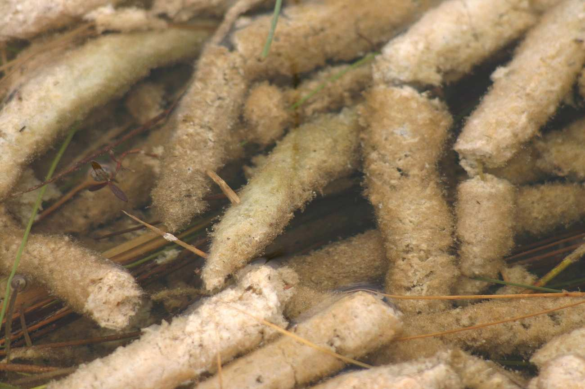
📚 Word WallWords scientists use
What to do: Tap or click each card to flip it and read what the word means.
Scene 2The Lesson
🌱 Part 1Energy Flows Through a Food Web
Every living thing needs energy. In the Everglades, energy starts with the Sun. Producers, like sawgrass and periphyton, use sunlight, water, and air to make their own food.
Consumers can't make food. They get energy by eating producers or other animals. All the eating links together make a food web.
🎞️ Put the scenes in orderHow does the Sun's energy reach a snail kite?
What to do: Drag each photo into the film strip, from first to last. You can also tap a photo, then tap a frame. Get the order right and your strip becomes a movie.
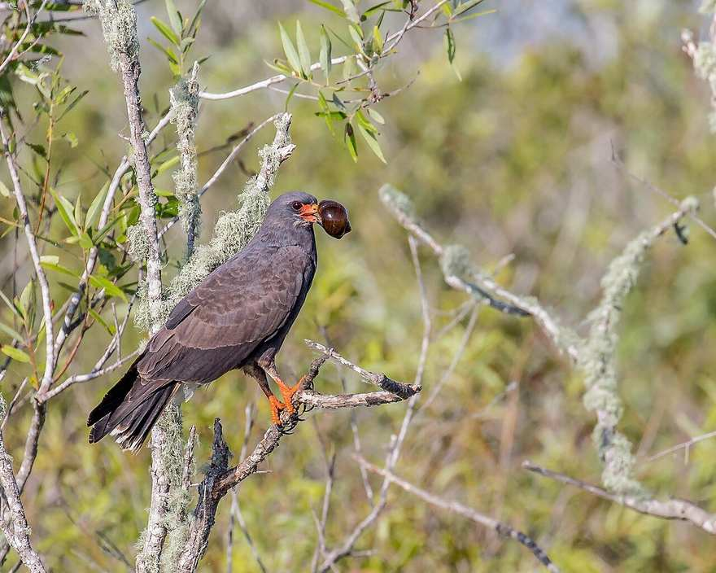
Leo draws an arrow from the snail kite to the apple snail, because the kite eats the snail. What do you think?
🌤 Part 2Who Eats Whom in the Everglades
Apple snails graze on periphyton, and tiny mosquitofish eat algae and tiny bugs. Snail kites eat apple snails, and anhingas spear small fish. At the top, the alligator eats fish, turtles, and birds.
When anything dies, decomposers like fungi and bacteria break it down and return nutrients to the water.
🧪 The Producer TestWhich one makes its own food?
What to do: Follow the steps one at a time. You will pick, test, and then explain.
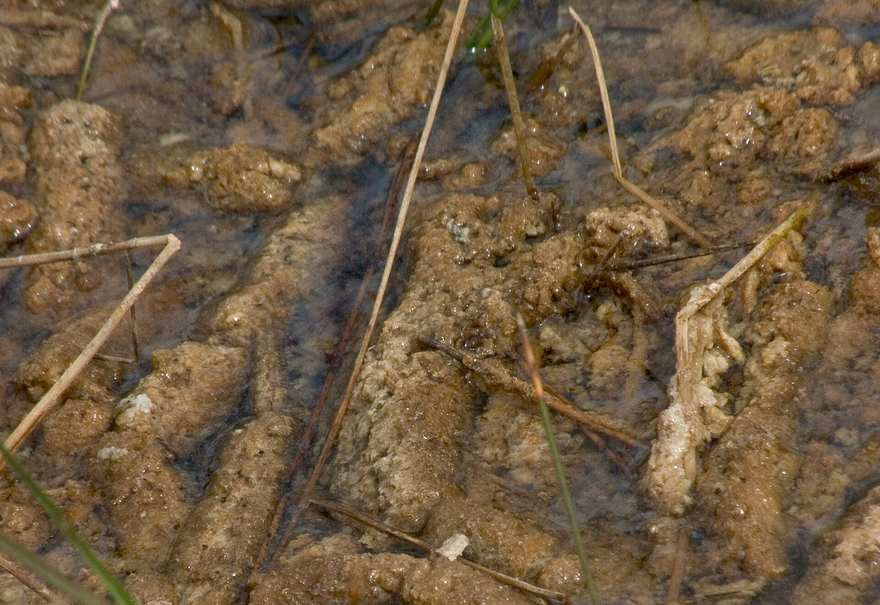
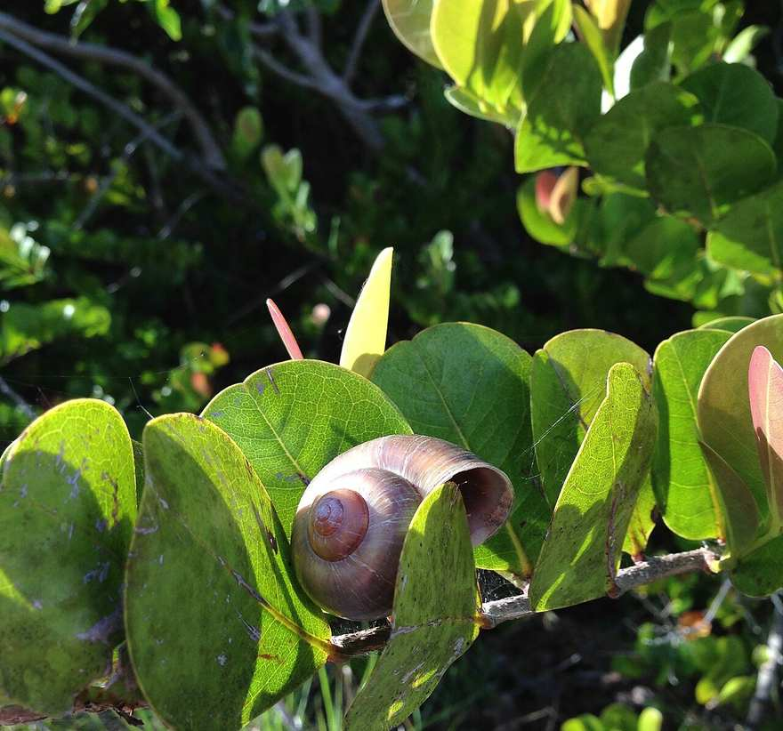
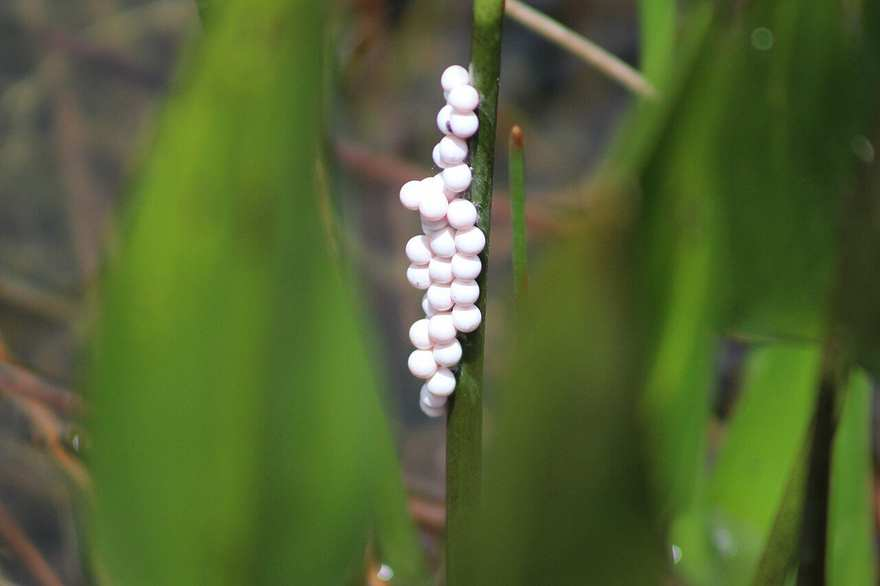
🌍 Part 3A Model of the Web
Scientists use a food web as a model. It helps them understand how energy moves and predict what happens when something changes.
If one animal disappears, the animals that eat it can go hungry, and the living things it ate can grow out of control.
🗼 The Energy TowerFrom the top predator down to where the energy starts
What to do: First, make a prediction. Then brush the glowing step: drag across it (or tap it again and again) until the photo shows.
Where does all the energy in this food web start?
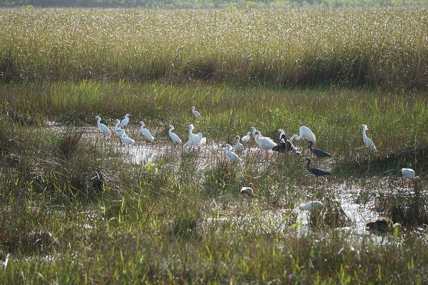
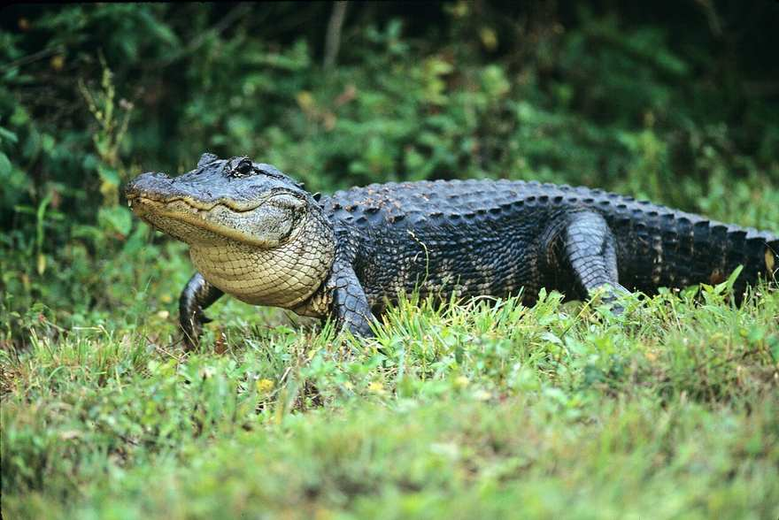
Level 1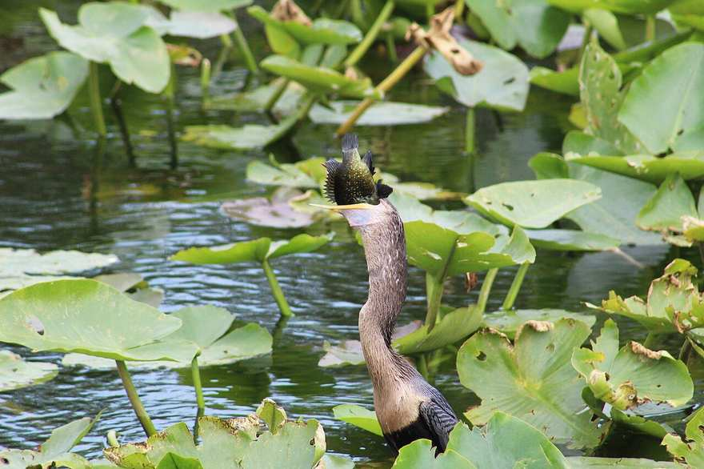
Level 2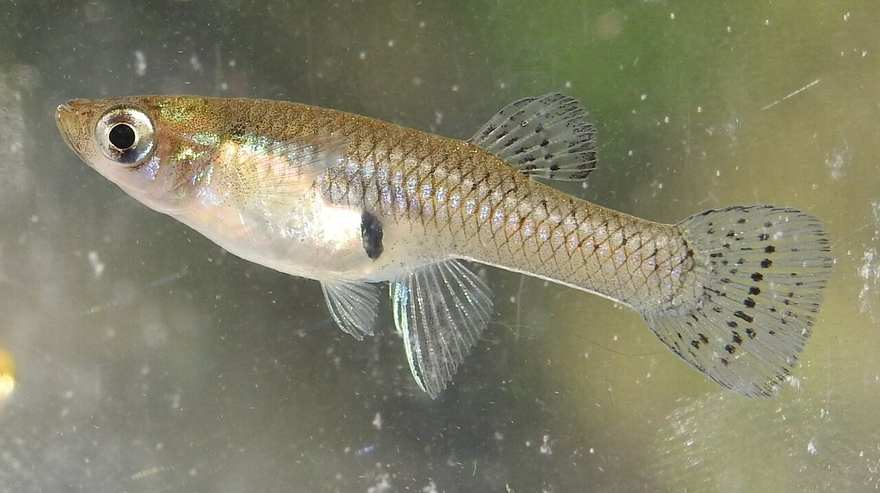
Level 3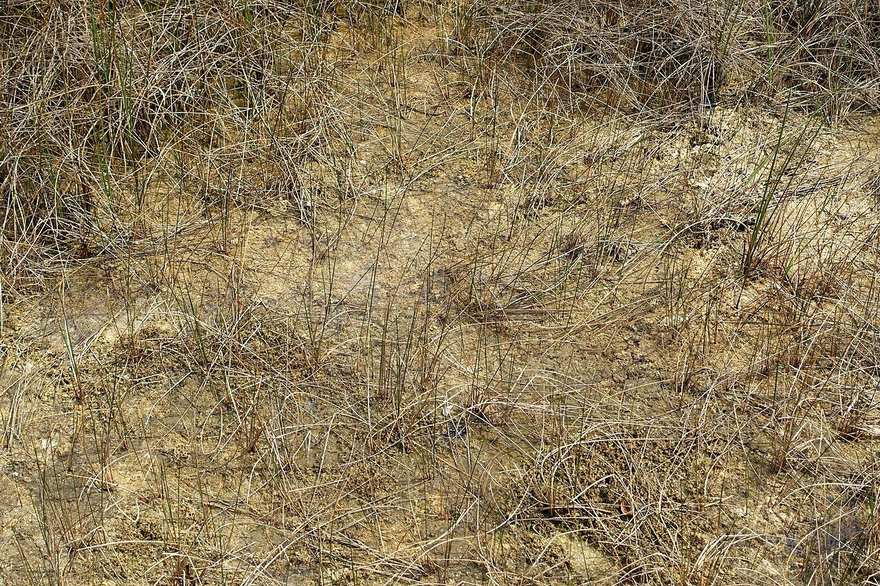
Level 4Energy flows up the tower. It starts with producers and moves up to the top predator. Decomposers break down living things from every level when they die and return nutrients to the water.
Sam says, "Alligators are at the top, so they don't matter to the rest of the food web." What do you think?
The Snail Kite Comeback
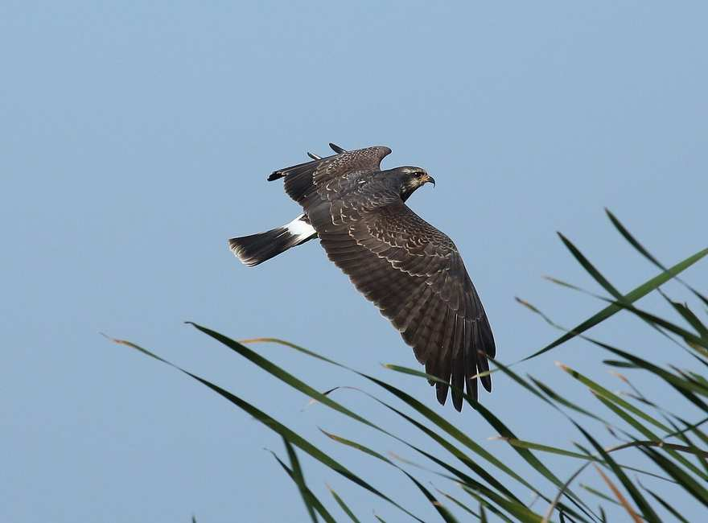
By the 1960s, only a few dozen snail kites were left in Florida. Many marshes had been drained, so there were few apple snails to eat.
People protected the birds and their marshes, and today Florida has many more snail kites. They still need apple snails to survive.
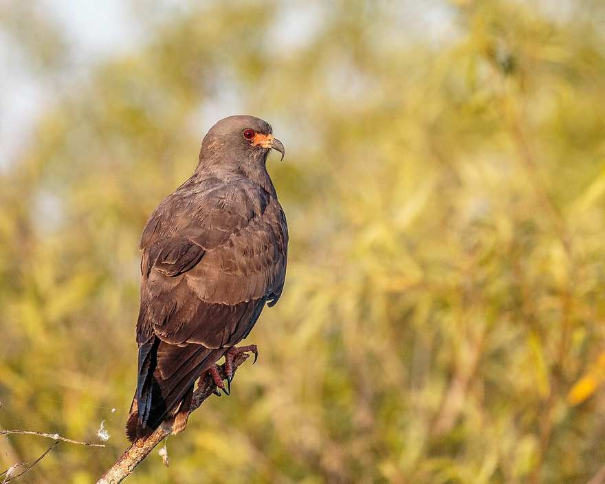
🕵️ Part 4Cascade Files
What to do: Pick 3 cards, one at a time. Tap a clue, then name its role. Predict what happens if it disappears, and watch the real place appear.
| Card | My observation | Its role | If it disappears | My evidence |
|---|
🌍 Rebuild the sceneUse your evidence to rebuild the scene OPTIONALOpen ▾
What to do: Pick one you solved. Pick the place it points to, then pick the living things that belong there.
Pick one from your chart and explain it.
Start with: "Card __ shows…"
Scene 3Self-Check
In a food web diagram, what does an arrow show?
Sawgrass is a producer. What does that mean?
Apple snails disappeared from part of the Everglades. What would most likely happen to the snail kite population?
Scene 4Assignment
🔍 Part ASort and classify
What to do: Read each one. Pick the best answer, or type your answer.
1. Sawgrass grows in shallow water and uses sunlight to make its own food.
2. An anhinga dives underwater and spears fish to eat.
3. Fungi and bacteria break down a dead fish on the bottom of the marsh.
4. Periphyton is a spongy mat that uses sunlight, water, and air to make food.
🚀 Part BShort answer
What to do: Answer in complete sentences. Use your science words.
1. The mosquitofish eats periphyton, and the anhinga eats mosquitofish. What is the relationship between these three organisms? Use the words predator and prey in your answer.
2. Imagine that fish and turtles disappeared from the Everglades. What do you think would happen to the American alligator population? Explain your reasoning.
✍️ Write and explainMosquitofish are disappearing from part of the Everglades because of pollution. What do you think will happen to the rest of the food web?
What to do: Pick one from your evidence chart. Answer the three questions. Use at least one of the science words under the boxes.
Start with: "I think that if mosquitofish disappeared…"
Start with: "I know this because the food web showed that…"
Start with: "This makes sense because in a food web…"
🎨 Part CDraw and label
What to do: Draw a food web of the Everglades. Include at least 5 organisms and 6 arrows. Label each organism, and point each arrow the way the energy flows. Add a title.
🎬 Your question from Scene 1Can you answer it now?
What do you still wonder about? Write your question here. Then answer it.
📋 My answersEverything you wrote, in one place
(Your answers show up here as you write.)
How to turn in: Copy your answers and paste them into the Canvas assignment. Or download the file and upload it. Then press Save my drawing in Part C and upload your drawing too.
✅ Checklist
What to do: Tap each item when it is done. Items you finish on the page check themselves.
- My evidence chart has 3 cascade cards and my explanation.
- Part A: all four sorted.
- Part B: questions 1 and 2.
- Part C: my drawing and both labels.
- Write and explain, with at least one science word.
🎬 Premiere my food web storyYour exhibit
What to do: Check your exhibit. Pick the one you wrote about, add your first name, then press Premiere film.
I observed…
Its role in the web…
My evidence…
It tells us…
🎞️ This film's frames
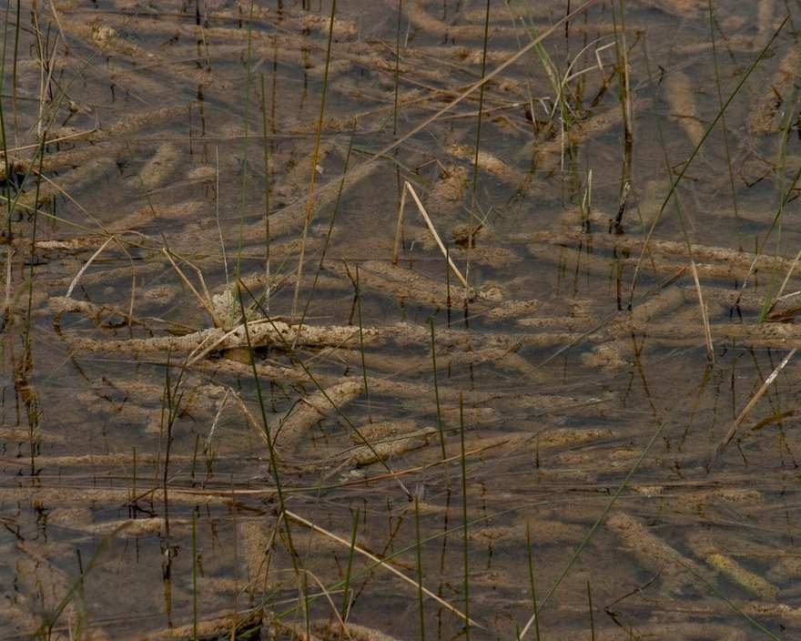
Sun to snail kite
The Producer Test
The Energy Tower
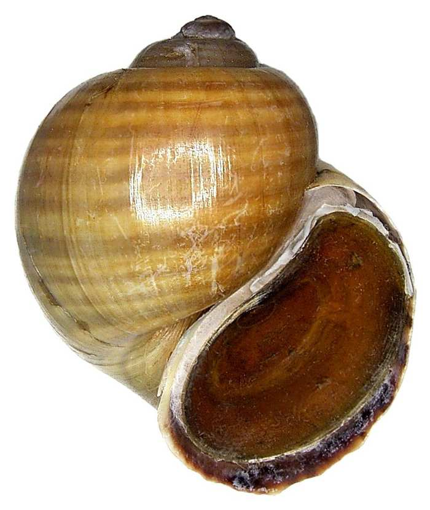
Cascade files
Earn all four frames in the Lesson, then finish the checklist.
🔜 Coming up nextComing up next: 30.01
How Are Florida Animals Adapted? Next time, discover the body parts and behaviors that help Florida animals survive.
Photo and music credits
- Florida Apple Snail Eggs (41410231671), evergladesnps, Public domain
- Pomacea paludosa (Say, 1829) (4520568613), Udo Schmidt from Deutschland, CC BY-SA 2.0
- Snail kite, showing snail, harns marsh (35107927902), Russ, CC BY 2.0
- EasternMosquitoFishJG Female, JeffreyGammon, CC BY-SA 4.0
- Wading Birds Feeding at Shark Valley Slough (49860843262), evergladesnps, Public domain
- Periphyton in January, NPSPhoto (9247302909), Everglades NPS from Homestead, Florida, United States, Public domain
- Tamiami Bridge Construction (5), NPSPhoto, 2011 (9250164284), evergladesnps, Public domain
- 150th Anniversary of U S Department of Agriculture-Historical imagery (201201…, USDAgov, Public domain
- Aerial view of alligator hole (3efd265b-1dd8-b71c-07d2-adff37ffd152), NPS, Public domain
- Turkey Tail Fungus at Edward Ball Wakulla Springs State Park in Florida, WV-Mike www.EpicRoadTrips.us, CC BY 3.0
- Tropical hardwood hammock on Everglades National Park Mahogany Hammock Trail, Miguel.v, CC BY-SA 3.0
- Anhinga Trail (53558084704), evergladesnps, Public domain
- 1-Snail Kite Landing-Lk Kiss-18 Feb 12-2, Sirkfish, CC BY-SA 4.0
- Shark River Slough - Everglades National Park - DSC09461, Daderot, CC0
- Shark River Slough, NPSPhoto (9099482643), Everglades NPS from Homestead, Florida, United States, Public domain
- Anhinga Spearing Fish (47923596913), evergladesnps, Public domain
- 1-Snail Kite with Snail-TWMA-19 Apr 29-2, Sirkfish, CC BY-SA 4.0
- Periphyton, NPSPhoto (9101393146), Everglades NPS from Homestead, Florida, United States, Public domain
- Periphyton (2), NPSPhoto (9099162501), Everglades NPS from Homestead, Florida, United States, Public domain
- EVERGLADE KITE SIGN AT CANAL LOCK, NEAR 40-MILE BEND - NARA - 544531, Fred Ward, Public domain
- Snail kite - Flickr - Andy Morffew, Andy Morffew from Itchen Abbas, Hampshire, UK, CC BY 2.0
- 150th Anniversary of U S Department of Agriculture-Historical imagery (201201…, USDAgov, Public domain
- Anhinga Swallowing Fish (47923607443), evergladesnps, Public domain
- Periphyton - Everglades National Park - DSC09409, Daderot, CC0
- Pahayokee area, NPSPhoto (9101714242), Everglades NPS from Homestead, Florida, United States, Public domain
- Periphyton, NPSPhoto, R. Cammauf (9101394590), Everglades NPS from Homestead, Florida, United States, Public domain
- Apple Snail in Everglades - panoramio, YourWorldExplorer, CC BY 3.0
- Snail Kite (26632773625), Andy Morffew from Itchen Abbas, Hampshire, UK, CC BY 2.0
- Periphyton (2), NPSPhoto (9101392592), Everglades NPS from Homestead, Florida, United States, Public domain
- Periphyton (4), NPSPhoto (9101391120), Everglades NPS from Homestead, Florida, United States, Public domain
- Male Snail Kite 0235, FlightEditor, CC BY-SA 4.0
- Music: Symphony No. 6 "Pastoral", II. Scene by the Brook (Ludwig van Beethoven), Musopen, public domain recording (via Wikimedia Commons).
- Opti the owl: Optima Academy. Sound effects are made by the page. The energy movie, the Producer Test, and the Energy Tower are models; every place photo is real. The X-ray view in the film is a model.